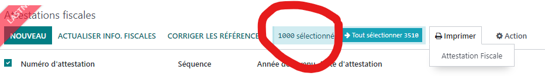
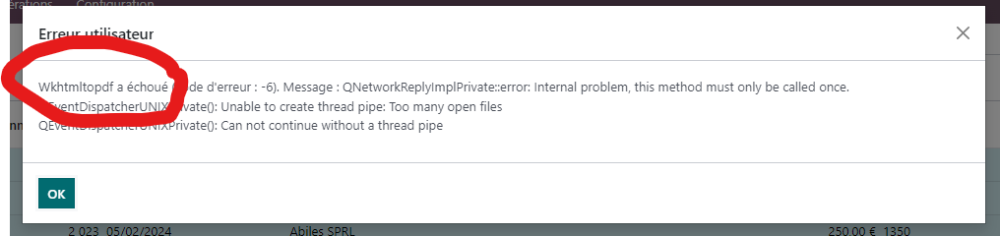

Have you faced a similar situation in Odoo?
selecting > 1000 records to print
After waiting for a couple of minutes this happens
Oh MY GOD!!

This module is developed by Charif SOLTANI.
Has been utilizing Odoo on a daily basis since 2016.